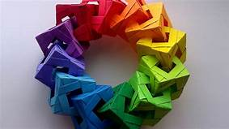

Origami Instruction And Diagrams
Step by step diagrams are probably are the most popular and easiest to follow way to show how to fold things out of paper.
Trying to find good origami instruction and internet can be a lot of work though. To help your search we've put
together the largest database of the origami diagrams anywhere on the Internet.